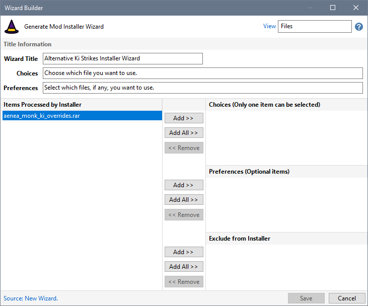
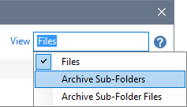
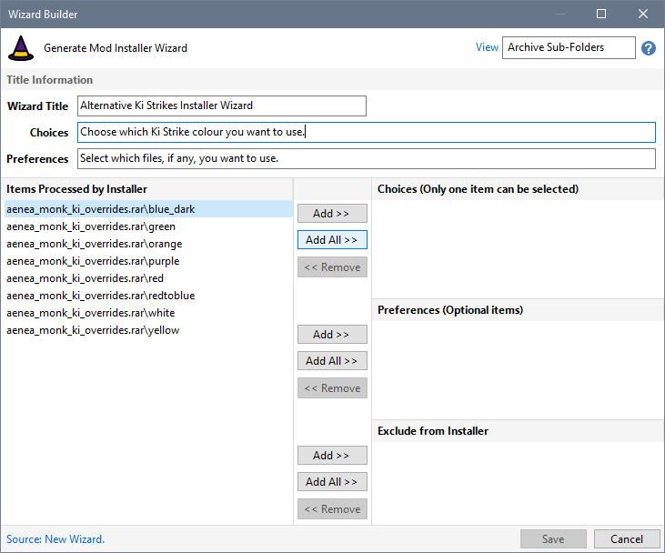
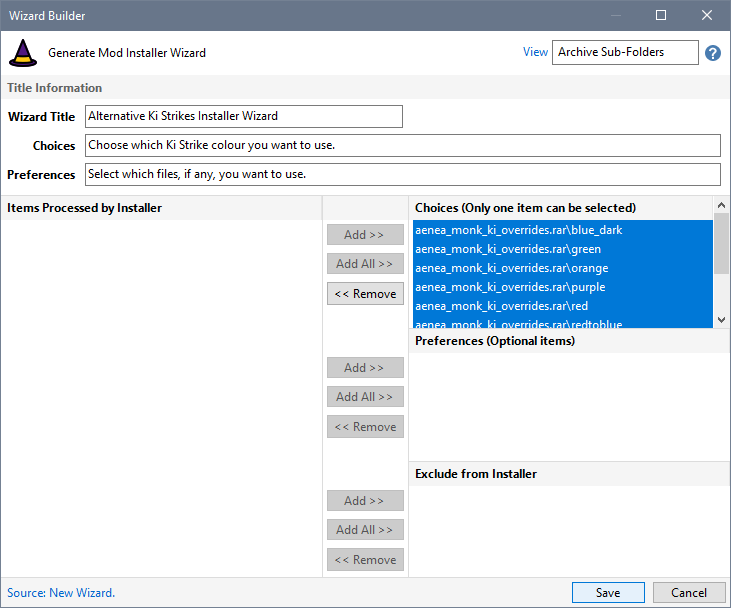
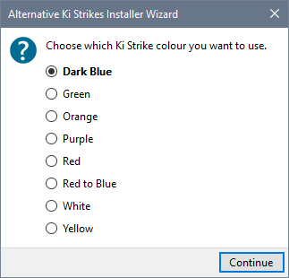

Alternative Ki Strikes provides a single Rar file containing folders for each available Ki Strike colour. Only one colour can be installed at a time.
- Select Alternative Ki Strikes in the Mod List and choose Installer Wizard Builder from the Tools Menu.

- Select Archive Sub- Folders from the View box.

- Enter the Choices text you want to display and click the Add All File Choices button

- Click Save to create your Wizard.

- The Create Installer process allows you to specify which colour folder should be processed before the Installer is created.

Related Topics
Build a Wizard for the Custom Menus Mod
Build a Wizard that uses File Preferences
Build a Wizard using Archive Folders
View Create Installer Wizards results